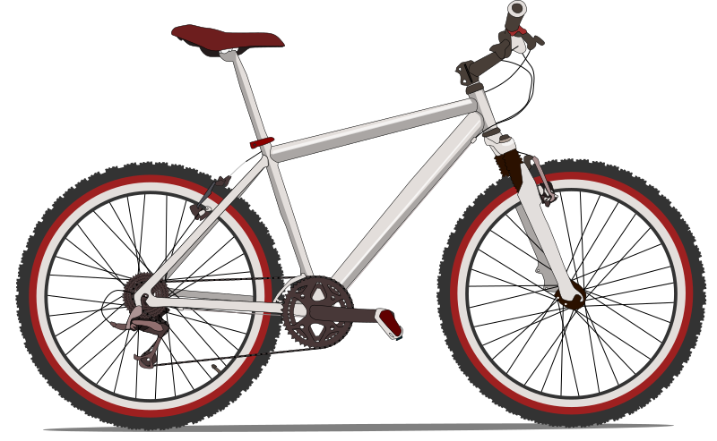

I kind of like storytelling these days, with what i have in hand. I dont know whether it has got
any real use or not. But this is a triumph to recreate a interactive representation of what i
learn and understand from the book Bicycling Science. I have been cycling for long
since my childhood. Fascinated by its physics and history was keen in building one myself. Still
not have attempted it. But a recent conversation on this subject to one of my friends, introduced
me to this beautiful book that explores the scientific analysis and reasoning behind human powered
machines and bicycles in particular.
The book is relatively costlier for me to purchase, so i borrowed it from my friend, and started
to learn for what i have a natural interest for. It depicts bicycling evolution with proper research.
It is more than a book of nouns, it is verb. Since i am learning human machine interaction with very
only little knowledge of programming and coding, i find this as the awesome opportunity for me to try
model the physics involved in an interactive manner, that has some fun and interactive design to it.
This is going to be a slow work in progress. Let's see how it goes... :)
ANATOMY OF BICYCLE
Let me try to paint a interactive picture of an average bicycle, that provides an overall detail of bicycle anatomy.
The evolution of bicycle design is tightly connected with its anatomy, and how we have innovated its design based on
our several specific use cases. That is how we got the basic diversity in bicycle design. Its design evolution
constantly remains us about the flexibility that it offered us, while still connecting to the touchstone "human
powered machine". Thus it has become the best hallmark example of love between labour of artistic design and
engineering innovation. Its abstract appearance is simple, and thus drives us to ride it making equal participation
of human work and machine efficiency to yield a wonderful travel.

Its baremetal feel and use, always causually calls for any wild innovation prossible. There is no exterior or interior,
or it can be seen as a proof of antithesis of such complicated facility. Its skeletal structure, and thus its design
is transparent which literally allowed all innovations to be integrated yet not overriding transparency. Another
unique feature of human powered transport machine. I personally think, it is this property that facilitated the fascinating
history of bicycle evolution throughout the centuries. This will continue to improve. Already its design range is
merging with other forms of vehicle denoting its unique design properties in action.
It is modular. The design can also get complex, when necessary. It is bidirectionally portable i.e, either one
can carry another - a unique property which not all vehicle can offer. Thus it makes is not just a vehicle but it
becomes one literally. Since anybody with minimal resource and workshop nearby can make a bicycle - the time to ride
from the minute of making is relatively simple and quite less than any other vehicle. It is a fact, that since bicycle
is mostly used by people than any other vehicle, getting basis modules will not be a problem. Moreover, it always
provides room for further innovation and tinkering = hacking, repairing, basically & presents this while one looks at
it too.